ggplot2 for RStan
stan_plot.RdVisual posterior analysis using ggplot2.
Usage
stan_plot(object, pars, include = TRUE, unconstrain = FALSE, ...)
stan_trace(object, pars, include = TRUE, unconstrain = FALSE,
inc_warmup = FALSE, nrow = NULL, ncol = NULL, ...,
window = NULL)
stan_scat(object, pars, unconstrain = FALSE,
inc_warmup = FALSE, nrow = NULL, ncol = NULL, ...)
stan_hist(object, pars, include = TRUE, unconstrain = FALSE,
inc_warmup = FALSE, nrow = NULL, ncol = NULL, ...)
stan_dens(object, pars, include = TRUE, unconstrain = FALSE,
inc_warmup = FALSE, nrow = NULL, ncol = NULL, ...,
separate_chains = FALSE)
stan_ac(object, pars, include = TRUE, unconstrain = FALSE,
inc_warmup = FALSE, nrow = NULL, ncol = NULL, ...,
separate_chains = FALSE, lags = 25, partial = FALSE)
quietgg(gg)Arguments
- object
A stanfit or stanreg object.
- pars
Optional character vector of parameter names. If
objectis a stanfit object, the default is to show all user-defined parameters or the first 10 (if there are more than 10). Ifobjectis a stanreg object, the default is to show all (or the first 10) regression coefficients (including the intercept). Forstan_scatonly,parsshould not be missing and should contain exactly two parameter names.- include
Should the parameters given by the
parsargument be included (the default) or excluded from the plot?- unconstrain
Should parameters be plotted on the unconstrained space? Defaults to
FALSE. Only available ifobjectis a stanfit object.- inc_warmup
Should warmup iterations be included? Defaults to
FALSE.- nrow,ncol
Passed to
facet_wrap.- ...
Optional additional named arguments passed to geoms (e.g. for
stan_tracethe geom isgeom_pathand we could specifylinetype,size,alpha, etc.). Forstan_plotthere are also additional arguments that can be specified in...(see Details).- window
For
stan_tracewindowis used to control which iterations are shown in the plot. Seetraceplot.- separate_chains
For
stan_dens, should the density for each chain be plotted? The default isFALSE, which means that for each parameter the draws from all chains are combined. Forstan_ac, ifseparate_chains=FALSE(the default), the autocorrelation is averaged over the chains. IfTRUEeach chain is plotted separately.- lags
For
stan_ac, the maximum number of lags to show.- partial
For
stan_ac, should partial autocorrelations be plotted instead? Defaults toFALSE.- gg
A ggplot object or an expression that creates one.
Value
A ggplot object that can be further customized
using the ggplot2 package.
Note
Because the rstan plotting functions use ggplot2 (and thus the
resulting plots behave like ggplot objects), when calling a plotting
function within a loop or when assigning a plot to a name
(e.g., graph <- plot(fit, plotfun = "rhat")),
if you also want the side effect of the plot being displayed you
must explicity print it (e.g., (graph <- plot(fit, plotfun = "rhat")),
print(graph <- plot(fit, plotfun = "rhat"))).
Details
For stan_plot, there are additional arguments that can be specified in
.... The optional arguments and their default values are:
point_est = "median"The point estimate to show. Either "median" or "mean".
show_density = FALSEShould kernel density estimates be plotted above the intervals?
ci_level = 0.8The posterior uncertainty interval to highlight. Central
100*ci_level% intervals are computed from the quantiles of the posterior draws.outer_level = 0.95An outer interval to also draw as a line (if
show_outer_lineisTRUE) but not highlight.show_outer_line = TRUEShould the
outer_levelinterval be shown or hidden? Defaults to =TRUE(to plot it).fill_color,outline_color,est_colorColors to override the defaults for the highlighted interval, the outer interval (and density outline), and the point estimate.
Examples
# \dontrun{
example("read_stan_csv")
#>
#> rd_st_> csvfiles <- dir(system.file('misc', package = 'rstan'),
#> rd_st_+ pattern = 'rstan_doc_ex_[0-9].csv', full.names = TRUE)
#>
#> rd_st_> fit <- read_stan_csv(csvfiles)
stan_plot(fit)
#> ci_level: 0.8 (80% intervals)
#> outer_level: 0.95 (95% intervals)
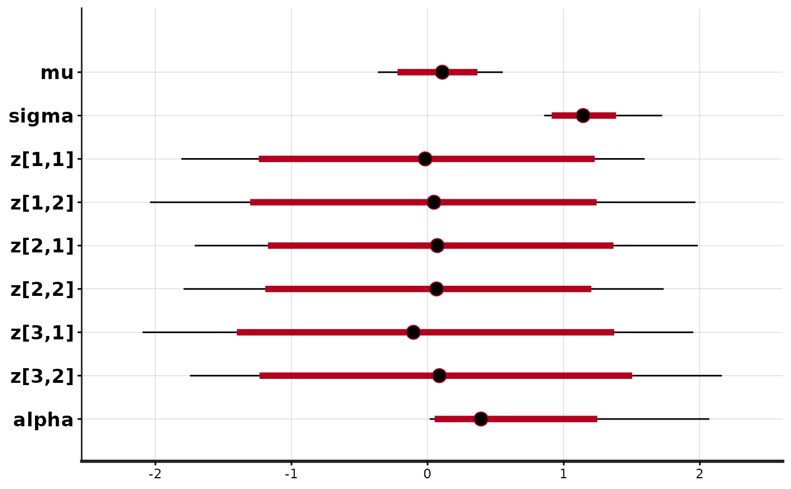
stan_trace(fit)
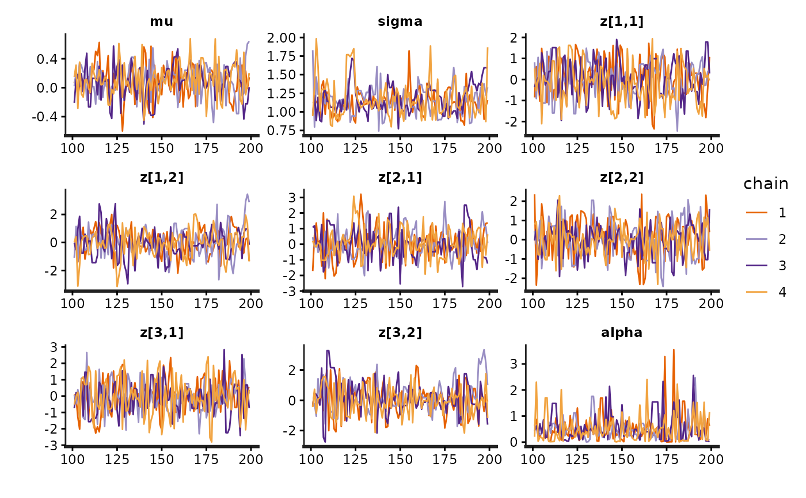
library(gridExtra)
fit <- stan_demo("eight_schools")
#>
#> > J <- 8
#>
#> > y <- c(28, 8, -3, 7, -1, 1, 18, 12)
#>
#> > sigma <- c(15, 10, 16, 11, 9, 11, 10, 18)
#>
#> > tau <- 25
#>
#> SAMPLING FOR MODEL 'eight_schools' NOW (CHAIN 1).
#> Chain 1:
#> Chain 1: Gradient evaluation took 7e-06 seconds
#> Chain 1: 1000 transitions using 10 leapfrog steps per transition would take 0.07 seconds.
#> Chain 1: Adjust your expectations accordingly!
#> Chain 1:
#> Chain 1:
#> Chain 1: Iteration: 1 / 2000 [ 0%] (Warmup)
#> Chain 1: Iteration: 200 / 2000 [ 10%] (Warmup)
#> Chain 1: Iteration: 400 / 2000 [ 20%] (Warmup)
#> Chain 1: Iteration: 600 / 2000 [ 30%] (Warmup)
#> Chain 1: Iteration: 800 / 2000 [ 40%] (Warmup)
#> Chain 1: Iteration: 1000 / 2000 [ 50%] (Warmup)
#> Chain 1: Iteration: 1001 / 2000 [ 50%] (Sampling)
#> Chain 1: Iteration: 1200 / 2000 [ 60%] (Sampling)
#> Chain 1: Iteration: 1400 / 2000 [ 70%] (Sampling)
#> Chain 1: Iteration: 1600 / 2000 [ 80%] (Sampling)
#> Chain 1: Iteration: 1800 / 2000 [ 90%] (Sampling)
#> Chain 1: Iteration: 2000 / 2000 [100%] (Sampling)
#> Chain 1:
#> Chain 1: Elapsed Time: 0.044 seconds (Warm-up)
#> Chain 1: 0.018 seconds (Sampling)
#> Chain 1: 0.062 seconds (Total)
#> Chain 1:
#>
#> SAMPLING FOR MODEL 'eight_schools' NOW (CHAIN 2).
#> Chain 2:
#> Chain 2: Gradient evaluation took 3e-06 seconds
#> Chain 2: 1000 transitions using 10 leapfrog steps per transition would take 0.03 seconds.
#> Chain 2: Adjust your expectations accordingly!
#> Chain 2:
#> Chain 2:
#> Chain 2: Iteration: 1 / 2000 [ 0%] (Warmup)
#> Chain 2: Iteration: 200 / 2000 [ 10%] (Warmup)
#> Chain 2: Iteration: 400 / 2000 [ 20%] (Warmup)
#> Chain 2: Iteration: 600 / 2000 [ 30%] (Warmup)
#> Chain 2: Iteration: 800 / 2000 [ 40%] (Warmup)
#> Chain 2: Iteration: 1000 / 2000 [ 50%] (Warmup)
#> Chain 2: Iteration: 1001 / 2000 [ 50%] (Sampling)
#> Chain 2: Iteration: 1200 / 2000 [ 60%] (Sampling)
#> Chain 2: Iteration: 1400 / 2000 [ 70%] (Sampling)
#> Chain 2: Iteration: 1600 / 2000 [ 80%] (Sampling)
#> Chain 2: Iteration: 1800 / 2000 [ 90%] (Sampling)
#> Chain 2: Iteration: 2000 / 2000 [100%] (Sampling)
#> Chain 2:
#> Chain 2: Elapsed Time: 0.034 seconds (Warm-up)
#> Chain 2: 0.025 seconds (Sampling)
#> Chain 2: 0.059 seconds (Total)
#> Chain 2:
#>
#> SAMPLING FOR MODEL 'eight_schools' NOW (CHAIN 3).
#> Chain 3:
#> Chain 3: Gradient evaluation took 2e-06 seconds
#> Chain 3: 1000 transitions using 10 leapfrog steps per transition would take 0.02 seconds.
#> Chain 3: Adjust your expectations accordingly!
#> Chain 3:
#> Chain 3:
#> Chain 3: Iteration: 1 / 2000 [ 0%] (Warmup)
#> Chain 3: Iteration: 200 / 2000 [ 10%] (Warmup)
#> Chain 3: Iteration: 400 / 2000 [ 20%] (Warmup)
#> Chain 3: Iteration: 600 / 2000 [ 30%] (Warmup)
#> Chain 3: Iteration: 800 / 2000 [ 40%] (Warmup)
#> Chain 3: Iteration: 1000 / 2000 [ 50%] (Warmup)
#> Chain 3: Iteration: 1001 / 2000 [ 50%] (Sampling)
#> Chain 3: Iteration: 1200 / 2000 [ 60%] (Sampling)
#> Chain 3: Iteration: 1400 / 2000 [ 70%] (Sampling)
#> Chain 3: Iteration: 1600 / 2000 [ 80%] (Sampling)
#> Chain 3: Iteration: 1800 / 2000 [ 90%] (Sampling)
#> Chain 3: Iteration: 2000 / 2000 [100%] (Sampling)
#> Chain 3:
#> Chain 3: Elapsed Time: 0.035 seconds (Warm-up)
#> Chain 3: 0.022 seconds (Sampling)
#> Chain 3: 0.057 seconds (Total)
#> Chain 3:
#>
#> SAMPLING FOR MODEL 'eight_schools' NOW (CHAIN 4).
#> Chain 4:
#> Chain 4: Gradient evaluation took 2e-06 seconds
#> Chain 4: 1000 transitions using 10 leapfrog steps per transition would take 0.02 seconds.
#> Chain 4: Adjust your expectations accordingly!
#> Chain 4:
#> Chain 4:
#> Chain 4: Iteration: 1 / 2000 [ 0%] (Warmup)
#> Chain 4: Iteration: 200 / 2000 [ 10%] (Warmup)
#> Chain 4: Iteration: 400 / 2000 [ 20%] (Warmup)
#> Chain 4: Iteration: 600 / 2000 [ 30%] (Warmup)
#> Chain 4: Iteration: 800 / 2000 [ 40%] (Warmup)
#> Chain 4: Iteration: 1000 / 2000 [ 50%] (Warmup)
#> Chain 4: Iteration: 1001 / 2000 [ 50%] (Sampling)
#> Chain 4: Iteration: 1200 / 2000 [ 60%] (Sampling)
#> Chain 4: Iteration: 1400 / 2000 [ 70%] (Sampling)
#> Chain 4: Iteration: 1600 / 2000 [ 80%] (Sampling)
#> Chain 4: Iteration: 1800 / 2000 [ 90%] (Sampling)
#> Chain 4: Iteration: 2000 / 2000 [100%] (Sampling)
#> Chain 4:
#> Chain 4: Elapsed Time: 0.03 seconds (Warm-up)
#> Chain 4: 0.018 seconds (Sampling)
#> Chain 4: 0.048 seconds (Total)
#> Chain 4:
#> Warning: There were 68 divergent transitions after warmup. See
#> https://mc-stan.org/misc/warnings.html#divergent-transitions-after-warmup
#> to find out why this is a problem and how to eliminate them.
#> Warning: Examine the pairs() plot to diagnose sampling problems
#> Warning: Bulk Effective Samples Size (ESS) is too low, indicating posterior means and medians may be unreliable.
#> Running the chains for more iterations may help. See
#> https://mc-stan.org/misc/warnings.html#bulk-ess
#> Warning: Tail Effective Samples Size (ESS) is too low, indicating posterior variances and tail quantiles may be unreliable.
#> Running the chains for more iterations may help. See
#> https://mc-stan.org/misc/warnings.html#tail-ess
stan_plot(fit)
#> ci_level: 0.8 (80% intervals)
#> outer_level: 0.95 (95% intervals)
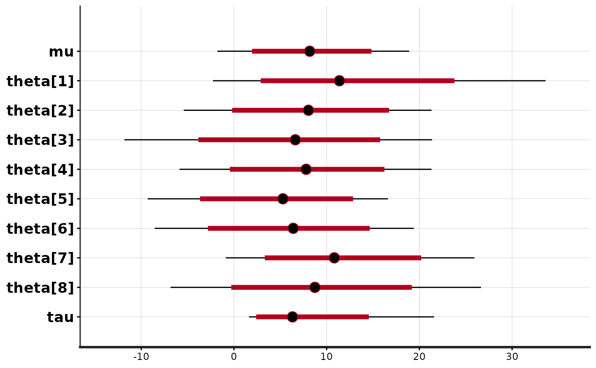
stan_plot(fit, point_est = "mean", show_density = TRUE, fill_color = "maroon")
#> ci_level: 0.8 (80% intervals)
#> outer_level: 0.95 (95% intervals)
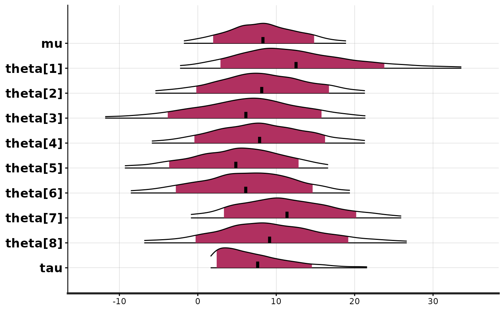
# histograms
stan_hist(fit)
#> `stat_bin()` using `bins = 30`. Pick better value `binwidth`.
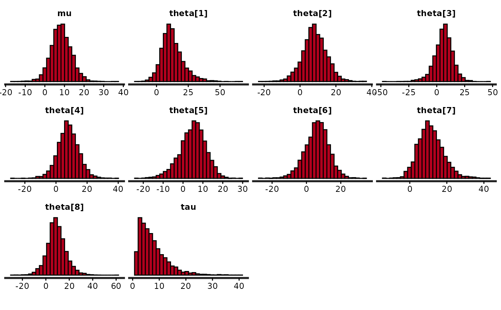
# suppress ggplot2 messages about default bindwidth
quietgg(stan_hist(fit))
 quietgg(h <- stan_hist(fit, pars = "theta", binwidth = 5))
quietgg(h <- stan_hist(fit, pars = "theta", binwidth = 5))
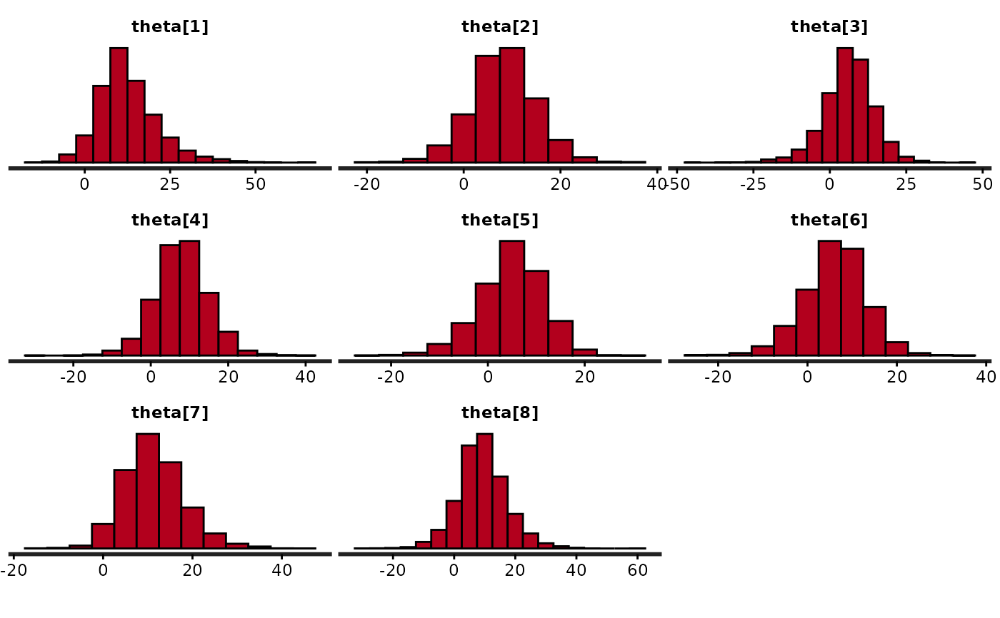
# juxtapose histograms of tau and unconstrained tau
tau <- stan_hist(fit, pars = "tau")
tau_unc <- stan_hist(fit, pars = "tau", unconstrain = TRUE) +
xlab("tau unconstrained")
#> Error in xlab("tau unconstrained"): could not find function "xlab"
grid.arrange(tau, tau_unc)
#> Error: object 'tau_unc' not found
# kernel density estimates
stan_dens(fit)
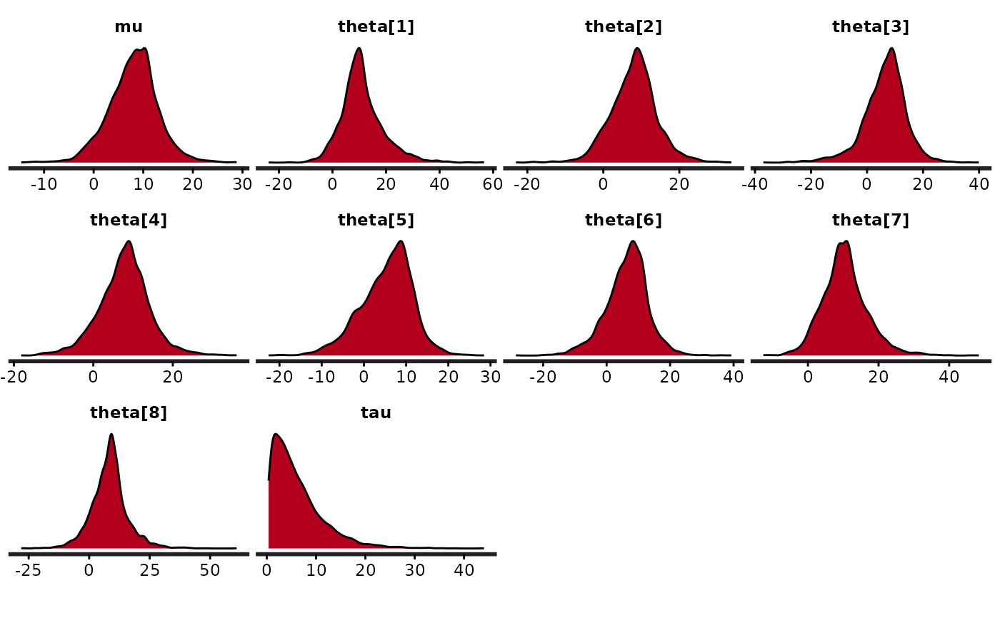
(dens <- stan_dens(fit, fill = "skyblue", ))
 dens <- dens + ggtitle("Kernel Density Estimates\n") + xlab("")
#> Error in ggtitle("Kernel Density Estimates\n"): could not find function "ggtitle"
dens
dens <- dens + ggtitle("Kernel Density Estimates\n") + xlab("")
#> Error in ggtitle("Kernel Density Estimates\n"): could not find function "ggtitle"
dens
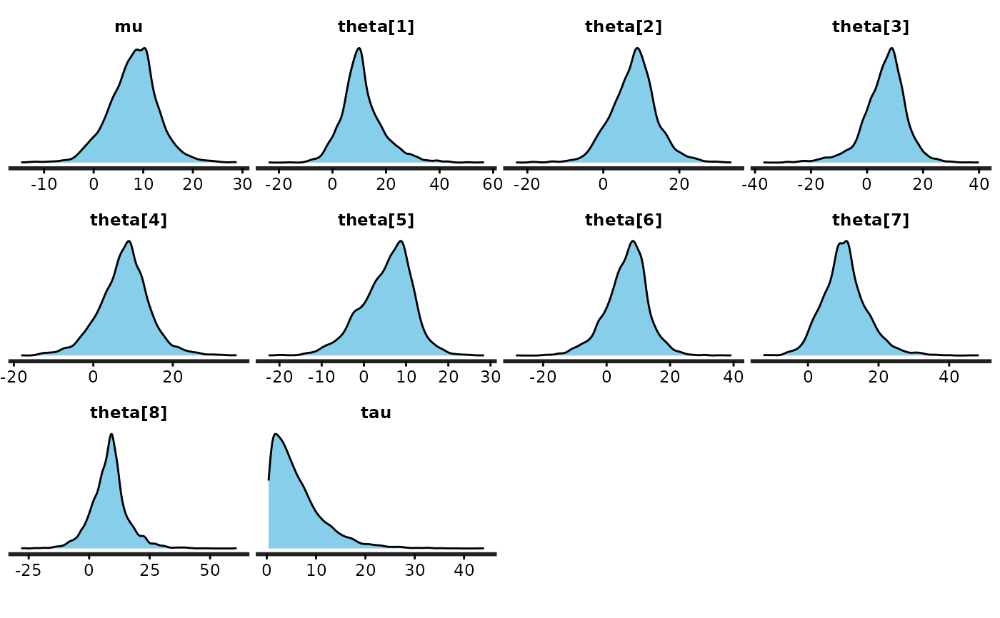
(dens_sep <- stan_dens(fit, separate_chains = TRUE, alpha = 0.3))
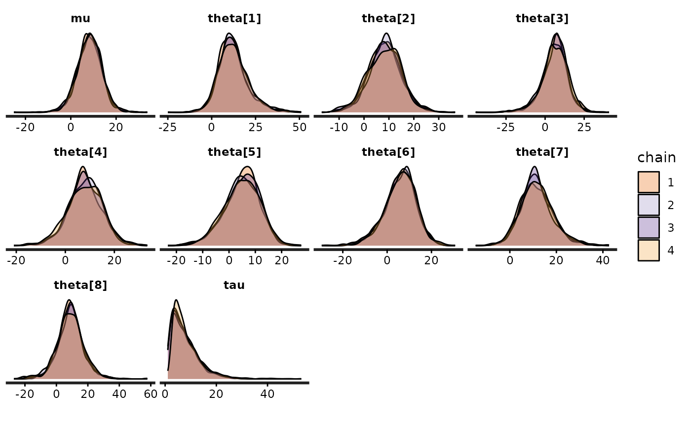
dens_sep + scale_fill_manual(values = c("red", "blue", "green", "black"))
#> Error in scale_fill_manual(values = c("red", "blue", "green", "black")): could not find function "scale_fill_manual"
(dens_sep_stack <- stan_dens(fit, pars = "theta", alpha = 0.5,
separate_chains = TRUE, position = "stack"))
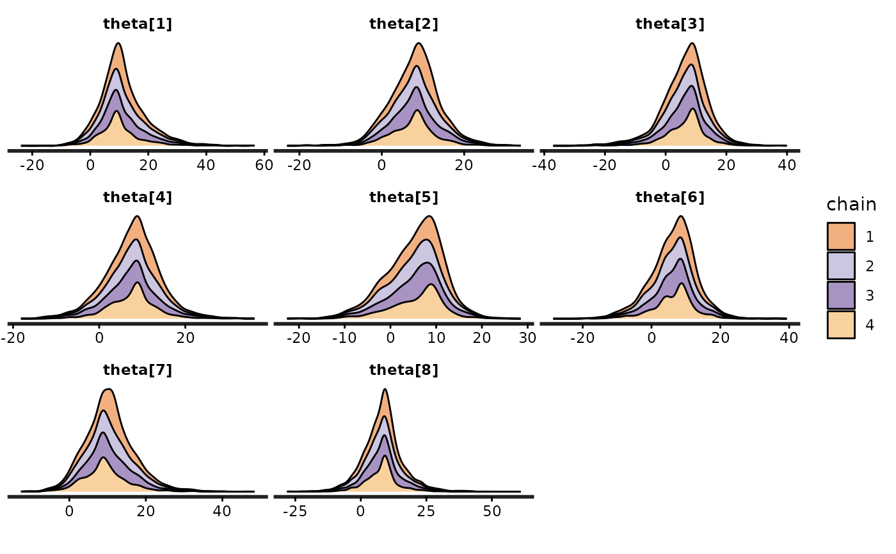
# traceplot
trace <- stan_trace(fit)
trace +
scale_color_manual(values = c("red", "blue", "green", "black"))
#> Error in scale_color_manual(values = c("red", "blue", "green", "black")): could not find function "scale_color_manual"
trace +
scale_color_brewer(type = "div") +
theme(legend.position = "none")
#> Error in scale_color_brewer(type = "div"): could not find function "scale_color_brewer"
facet_style <- theme(strip.background = ggplot2::element_rect(fill = "white"),
strip.text = ggplot2::element_text(size = 13, color = "black"))
#> Error in theme(strip.background = ggplot2::element_rect(fill = "white"), strip.text = ggplot2::element_text(size = 13, color = "black")): could not find function "theme"
(trace <- trace + facet_style)
#> Error: object 'facet_style' not found
# scatterplot
(mu_vs_tau <- stan_scat(fit, pars = c("mu", "tau"), color = "blue", size = 4))
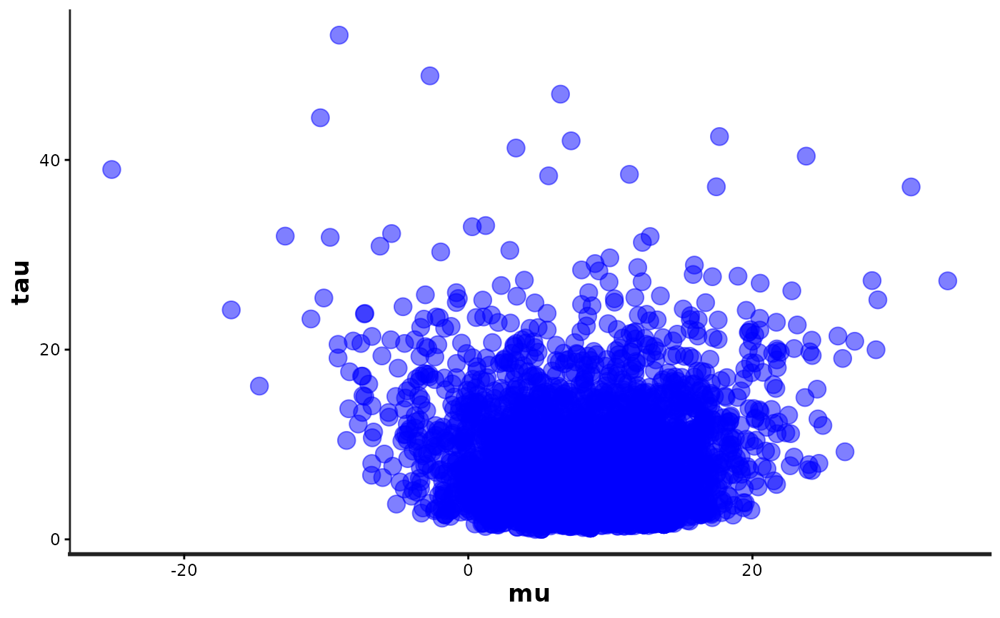
mu_vs_tau +
ggplot2::coord_flip() +
theme(panel.background = ggplot2::element_rect(fill = "black"))
#> Error in theme(panel.background = ggplot2::element_rect(fill = "black")): could not find function "theme"
# }